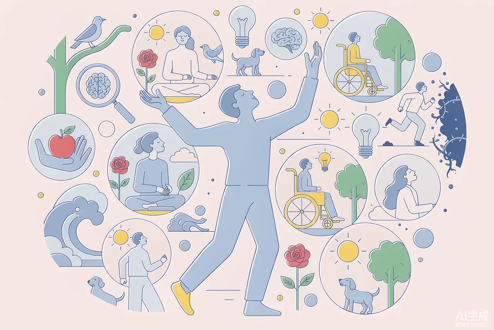

心理过程
研究感觉、知觉、注意、记忆、思维等认知过程，以及情绪情感与意志过程的基本规律。心理活动不是彼此孤立的：知觉依赖注意的选择，记忆为思维提供素材，情绪则会增强或抑制认知。以课堂学习为例，学生先通过感觉登记信息，再经注意筛选进入工作记忆，最后通过复述与组织转入长时记忆，该主题旨在揭示各过程之间的衔接与协同机制。
基础心理学 · DISCIPLINE
General Psychology
心理学知识体系的总览与入门
普通心理学是心理学的基础与入门学科，系统研究人的心理现象及其一般规律。它把心理活动分为认知过程、情绪情感过程和意志过程，并考察需要、动机、能力、气质与性格等个性特征，探讨心理与行为、心理与生理及个体与社会的关系。例如，同样一道题目，有人因注意集中、记忆提取顺畅而迅速作答，有人却因情绪紧张而思维阻塞，这正体现了心理过程的协同作用。作为整个心理学的总纲，它为实验、认知、社会、发展等分支提供共同的概念框架。理解这些内容，有助于我们在学习与工作中认识自己的注意、记忆与情绪特点，安排复习节奏、调节压力，并更理性地看待个体差异。

这个分支主要研究什么
研究感觉、知觉、注意、记忆、思维等认知过程，以及情绪情感与意志过程的基本规律。心理活动不是彼此孤立的：知觉依赖注意的选择，记忆为思维提供素材，情绪则会增强或抑制认知。以课堂学习为例，学生先通过感觉登记信息，再经注意筛选进入工作记忆，最后通过复述与组织转入长时记忆，该主题旨在揭示各过程之间的衔接与协同机制。
探讨能力、气质与性格等个性心理特征的结构及个体差异，分析需要、动机、价值观等个性倾向性如何推动行为。例如，面对同样的任务，高成就动机者更倾向于设定挑战性目标，而不同气质类型的人在反应速度与情绪稳定性上表现各异。该主题还关注自我意识的构成，说明人如何通过自我评价与自我调节来影响自身行为。
考察心理活动与神经系统、内分泌系统之间的关联，阐述脑的功能组织对认知与情绪的制约。例如，长期的应激状态会激活下丘脑—垂体—肾上腺轴，影响心率与注意力；而情绪变化也常伴随自主神经活动的改变。该主题强调心理现象具有可观察的生理基础，但不能简单还原为生理过程，需要在多个层次上加以解释。
描述个体从婴幼儿到成年乃至老年的心理变化趋势，分析遗传与环境、成熟与学习在心理形成中的交互作用。例如，儿童语言能力的获得既依赖先天的语言准备，也离不开照料者的回应与语言输入；老年期则可能出现加工速度下降而知识经验保持较好的差异。该主题关注发展的普遍规律与个体差异，为理解终身变化提供框架。
介绍心理学的基本原则与主要研究方法，梳理科学心理学诞生的历史条件与学科分化脉络。1879年冯特在莱比锡建立实验室，标志心理学脱离哲学成为独立实验科学；此后行为主义、精神分析、认知取向等相继兴起。该主题阐明心理学与哲学、生理学等相邻学科的联系与区别，帮助学习者建立整体的学科图景与科学态度。
这一分支能带来什么
学习普通心理学能让你掌握一套描述心理活动的共同语言，例如区分感觉与知觉、理解注意的选择性与记忆的编码提取过程。面对学习效率低、情绪波动或人际误会时，你能从心理机制的角度提出更具体的问题，而不是停留于笼统的评价，从而形成更理性、更善于反思的思考习惯。
一项奠定了这个领域的研究
1879年，威廉·冯特在德国莱比锡大学创建了世界上第一个专门用于心理学实验的实验室，标志着心理学从哲学中独立出来。冯特主张用实验与内省相结合的方法研究意识经验，将复杂意识分解为基本元素并考察其结合规律。实验室吸引了来自欧洲与美国的众多学者，培养了首批实验心理学研究者，推动了心理物理学与反应时研究的发展。尽管其构造主义取向后来受到机能主义与行为主义的批评，但这一事件确立了心理学以实证方法研究心理与行为的基本路径，被视为学科独立的里程碑。
还没定论的问题，往往最值得追问
心理学能否既研究可观察的行为，又有效处理意识与主观体验，长期存在分歧。行为主义主张只研究外显行为，认知与神经取向则重新接纳内部过程。如何在客观测量与现象学经验之间取得平衡，仍是方法论争论的焦点。
近年来心理学面临可重复性危机，许多经典效应在重复实验中未能稳定重现。这促使学界反思样本量偏小、发表偏差与统计方法不当等问题，并推动预注册、开放数据与更大样本的合作研究，以检验既有结论的稳健性。
把概念带回日常观察
准备一个小本子，在一天中选取三个固定时段，用一两句话记下此刻最占据注意的事情以及当下的情绪强度，可用1到5分表示。连续记录一周后回看，注意哪些情境让你分心、哪些活动带来较高的投入感。通过这种简单的自我观察，你能更具体地认识自己的注意与情绪规律。仅作自我观察，不构成诊断。
怎么研究，用在哪里
进入这个分支的术语入口
与这一领域密切相关的名字
建立世界上第一个心理学实验室，系统构建实验心理学体系，被公认为科学心理学独立的奠基者。
美国心理学先驱，倡导机能主义与实用主义取向，其《心理学原理》影响深远。
创立精神分析学说，强调潜意识冲突与早期经历对人格和心理异常的深刻影响。